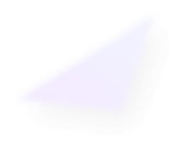

Унікальна технологія
Тіньові паруса для Вашої зони комфорту
Унікальний продукт для вашого закладу, що забезпечує захист від сонця та комфорт відвідувачів

 


Унікальна технологія
Унікальний продукт для вашого закладу, що забезпечує захист від сонця та комфорт відвідувачів

Про продукт
Ми проектуємо та створюємо тіньові вітрила. Тіньове вітрило – це виріб із текстильного або тентового матеріалу для сонцезахисту та дизайну простору. Тіньові вітрила використовують усередині приміщень та на відкритому повітрі. Залежно від завдання матеріал тіньових вітрил VERANDA відштовхує воду, блокує сонячні промені або виконує обидві функції одночасно.